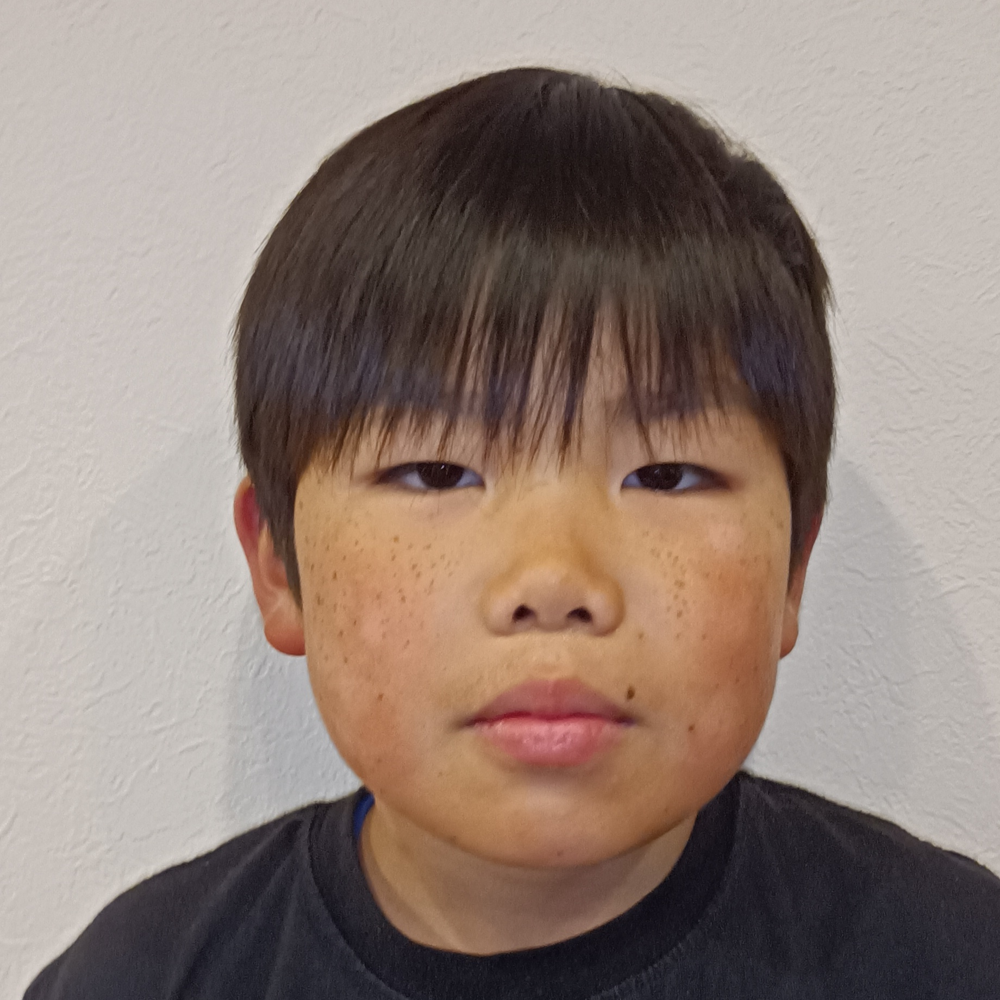
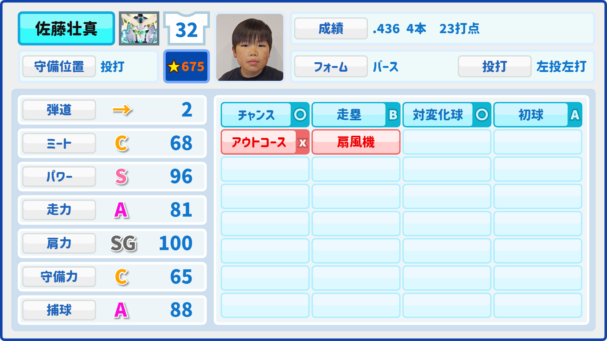
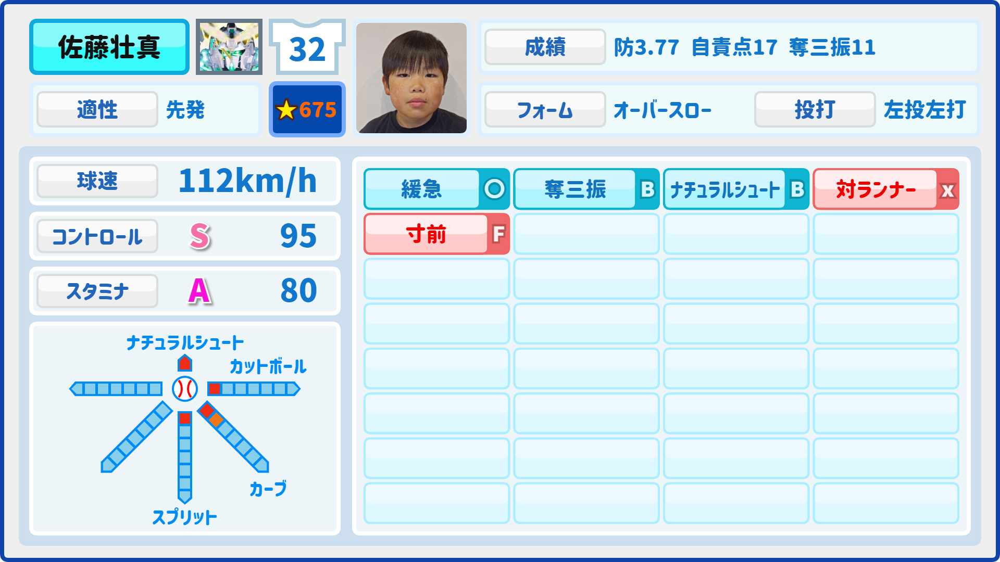

- 32
- 佐藤壮真
- さとう そうま
7/30時点
| 投打 | 左投左打 |
|---|---|
| 誕生日 | 2012/6/2 | 守備 | 先 中 |
| 打率 | 打席 | 安打 | 本塁打 | 打点 | OPS | ||||||||||||
|---|---|---|---|---|---|---|---|---|---|---|---|---|---|---|---|---|---|
| .425 | 114 | 37 | 4 | 36 | 1.434 |
| シーズン | 試合数 | 打席 | 打数 | 安打 | 二塁打 | 三塁打 | 本塁打 | 塁打 | 打点 | 三振 | 四球 | 三振率 | 打率 | 出塁率 | 長打率 | OPS | BB/K |
|---|---|---|---|---|---|---|---|---|---|---|---|---|---|---|---|---|---|
| 2024S1 | 3 | 49 | 32 | 13 | 9 | 0 | 0 | 22 | 13 | 16 | 17 | 50% | .406 | .612 | .687 | 1.300 | 1.062 |
| 2024S2 | 5 | 65 | 55 | 24 | 17 | 0 | 4 | 53 | 23 | 5 | 13 | 9% | .436 | .544 | .963 | 1.507 | 2.6 |
| 通算 | 8 | 114 | 87 | 37 | 26 | 0 | 4 | 75 | 36 | 21 | 30 | 24% | .425 | .572 | .862 | 1.434 | 1.062 |
※2024S2の評価
| 防御率 | 登板数 | 打者 | 奪三振 | 自責点 | 被打率 | ||||||||||||
|---|---|---|---|---|---|---|---|---|---|---|---|---|---|---|---|---|---|
| 5.30 | 8 | 105 | 20 | 38 | .600 |
| シーズン | 登板 | 勝利 | 敗北 | 完投 | 完封勝 | 無四球 | 投球回数 | 勝率 | 打者 | 被安打 | 被本塁打 | 四球 | 奪三振 | 奪三振率 | 自責点 | 防御率 | 被打率 |
|---|---|---|---|---|---|---|---|---|---|---|---|---|---|---|---|---|---|
| 2024S1 | 3 | 0 | 3 | 2 | 0 | 1 | 8 | .000 | 48 | 33 | 5 | 3 | 9 | 3.37 | 21 | 7.87 | .733 |
| 2024S2 | 5 | 2 | 3 | 3 | 0 | 3 | 13 1/2 | .400 | 57 | 27 | 5 | 2 | 11 | 2.44 | 17 | 3.77 | .490 |
| 通算 | 8 | 2 | 6 | 5 | 0 | 4 | 21 1/2 | .250 | 105 | 60 | 10 | 5 | 20 | 2.79 | 38 | 5.30 | .600 |
※2024S2の評価
